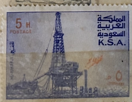
| SOURCE | TITLE| IMAGE MATCH | click to source page |
| HipStamp | Saudi Arabia 1976-81 Oil Rig at Al-Khafji 25h (deep dull ... | Middle East - Saudi Arabia, Stamp / HipStamp |  |
| eBay | Saudi KSA #Mi602 MNH 1977 Al Khafji Oil Rig [733] | eBay | 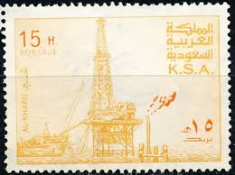 |
| Colnect | Saudi Arabia : Stamps [Series: Al Khafji Oil Rig] [1/3] : Colnect 📮 | 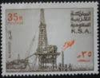 |
| Alamy | Al letter hi-res stock photography and images - Alamy | 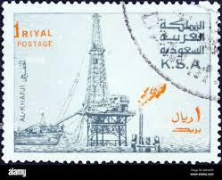 |
| HipStamp | SAUDI ARABIA Scott 734 Used VF 20h Oil Rig, DAMMAM. postmark/cancel | Middle East - Saudi Arabia, General Issue Stamp / HipStamp | 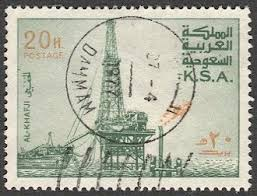 |
| CollectorBazar | K.S.A Oil ExplorationUsed - B1923 | 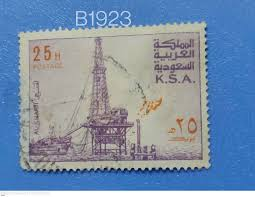 |
| Dreamstime.com | 126 Stamp Saudi Arabia Stock Photos - Free & Royalty-Free Stock Photos from Dreamstime | 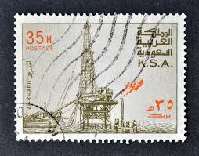 |
| Dreamstime.com | Al Khafji Oil Rig - Producing Plant Editorial Image - Image of correspondence, building: 367057710 | 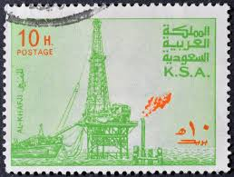 |
| Todocolección | arabia saudita 1965-1972 - avion boeing 720b - - Buy Stamps from other Asian countries on todocoleccion | 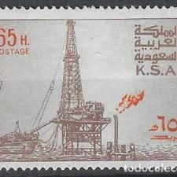 |
| Shutterstock | Saudi Arabia Circa 1977 Postage Stamps Stock Photo 152015477 | Shutterstock | 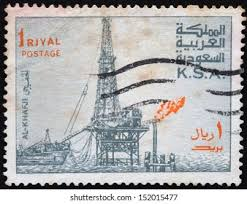 |
| Alamy | Postage marine hi-res stock photography and images - Alamy | 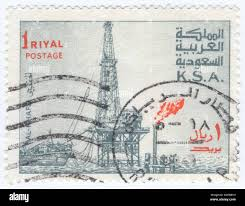 |
| Desertcart | Saudi Arabia 1976 81 Oil Rig At Al Khafji 50h | Desertcart INDIA | 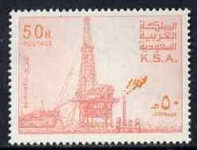 |
| NAVER | 사우디아라비아 유전 라스 알 카프지(Saudi Arabia Ras Al Khafji) : 네이버 블로그 | 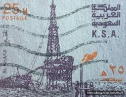 |
| eBay | SAUDI ARABIA 892a - Al Khafji Oil Rig "1982 Perf 13.5 x 13.5" (pb36503) | eBay | 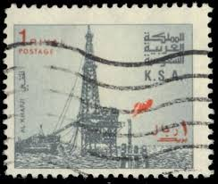 |
| eBay | Saudi Arabia 1976/82 ** Mi.600, SG1167, VARIETY: FAT RED FLAME [sfm837] | eBay | 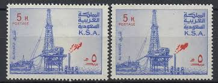 |
| eBay | Saudi Arabia 1976/82 ** Mi.611 I+II, SG1178+1187, Oil rig Ölförderung [sfm761] | eBay | 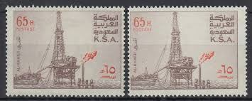 |
| esam.ir | تمبر خاص دکل نفتی خلیج فارس | عربستان | 1976 | 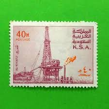 |
| NAVER | 사우디아라비아 유전 라스 알 카프지(Saudi Arabia Ras Al Khafji) : 네이버 블로그 | 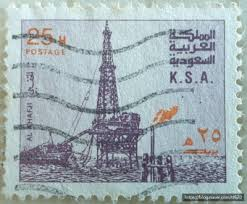 |
| العربية | الثقافة وخلافها.. فجوة هائلة بين معارف اليوم والأمس | 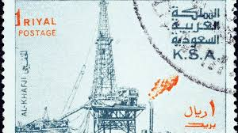 |
| eBay | Saudi Arabia #733, 750 MNG | eBay | 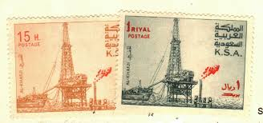 |
| Dreamstime.com | Saudi Arabia King Flag Stock Photos - Free & Royalty-Free Stock Photos from Dreamstime | 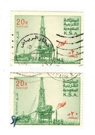 |
| Todocolección | arabia saudita ivert nº 441, extracción del pet - Buy Stamps from other Asian countries on todocoleccion | 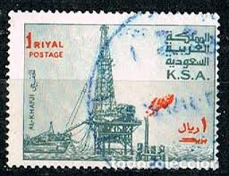 |
| eBay | SAUDI ARABIA 1984 20h GREEN & ORANGE, OIL RIG AL-KHAFJI | eBay | 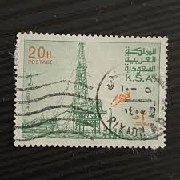 |
| eBay | Saudi Arabia- Mint NH Condition - Scott# 740a - SCV$ 75.00* | eBay | 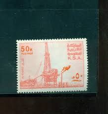 |
| howtobuildanarchive.com | How to Build an Archive | 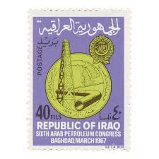 |
| lastdodo.com | Derrick Hassi-Messaoud 0,95 (1962) - Algeria - LastDodo | 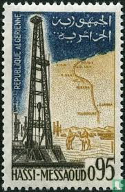 |
| eBay | Saudi Arabia #732-3, 739-41, 743, 750 used oil wells | eBay | 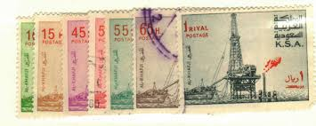 |
| eBay | 👍SAUDI ARABIA 1976 OIL DERRICK SC#734 gutter PAIR MNH 💲FREE SHIPPING💲 | eBay | 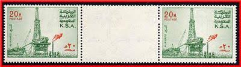 |
| eBay | Saudi Arabia 1986 Oil Rigs/Petrol Industry Drilling Well Commerce Maps 2v MNH | eBay | 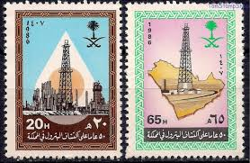 |
| Shutterstock | Old Saudi Stamp: Over 211 Royalty-Free Licensable Stock Photos | Shutterstock | 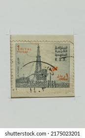 |
| Saudi Arabia National Day Stamps | 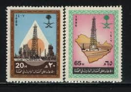 | |
| Shutterstock | Iraq Circa 1967 Cancelled Postage Stamp Stock Photo 1891151383 | Shutterstock | 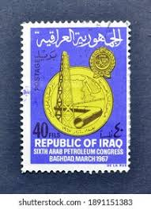 |
| Temu | vintage watches kuwait sold on Temu United States | 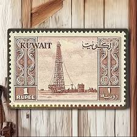 |
| Photo by mehdi (@mehdi.boudjelel) · February 13, 2026 | 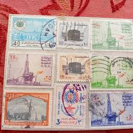 | |
| eBay | EGYPT:1967 SC#C116 Used 15th anniversary of the revolution AL1198 | eBay | 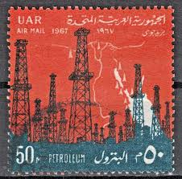 |
| eBay | Tunisia 10 Dinars 1986 Banque Centrale Tunisie World Banknotes Money h9955 | eBay | 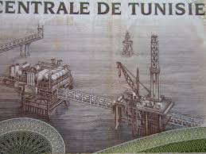 |
| HipStamp | Sharjah Stamp-1984 New York World Fair Strip CTO SET Best Quality | Middle East - Saudi Arabia, Stamp / HipStamp | 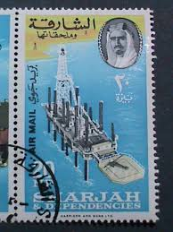 |
| eBay | MOMEN: EGYPT SC #466 VAR. PAIR MISPERF MINT OG NH LOTT #65800 | eBay | 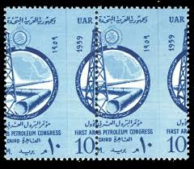 |
| Papergreat | Papergreat: Old stamps and changing thoughts on refugees and petroleum | 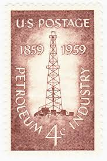 |
| Alamy | Syria outline hi-res stock photography and images - Alamy | 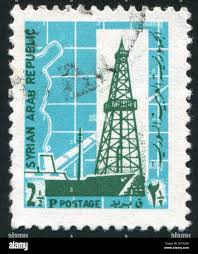 |
| Todocolección | nº yvert 448***. año 1959. congreso arabe del p - Buy Antique stamps of Egypt on todocoleccion | 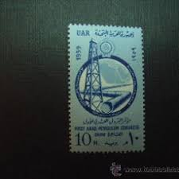 |
| University of Pennsylvania | Volume 72 Number 24 | University of Pennsylvania Almanac | 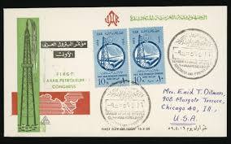 |
| eBay | UAE United Arab Emirates 43-46 MNH 1975 Oil Drilling & Production Full Set VF | eBay | 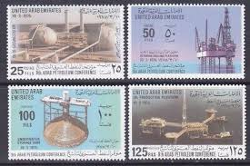 |
| eBay | Egypt 797-799 MNH 1965 Revolution | eBay | 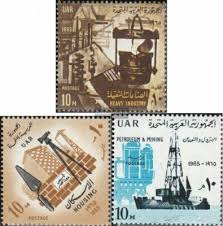 |
| eBay | 1954 Vintage Book Oil Petroleum and Arab Politics كتاب البترول والسياسة العربية | eBay | 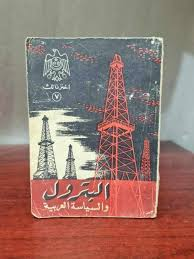 |
| kuwait philatelic | Chemical Fertiliser Plant 1967 - KUWAIT PHILATELIC | 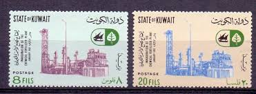 |
| eBay | Kuwait, Scott 149, Oil Derrick, 1959, used, 106975 | eBay | 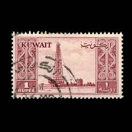 |
| eBay | Business, Industry, Careers 1951-1960 Year of Issue Unused US Stamps (1941-Now) for sale | eBay | 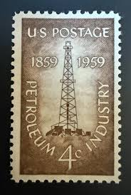 |
| eBay | Saudi KSA #Mi869 MNH 1987 General Petroleum Minerals Organization [1042] | eBay | 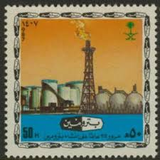 |
| eBay | UAE 1975 fine used Mi.31/34 Erdöl Oil Konferenz Bohrinsel Förderinsel [gd784] | eBay | 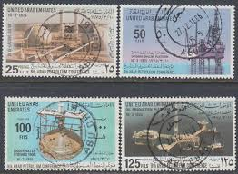 |
| TouchStamps | Stamp: Yanbu Port (Saudi Arabia 1997) - TouchStamps | |
| Wikipedia | ملف:Stamp of Abu Dhabi - 1966 - Colnect 677238 - 1 - Oil Rig and Dromedary Camelus dromedarius - Surcharged.jpeg - ويكيبيديا | |
| eBay | KUWAIT Chemical Fertilizer Plant MNH set | eBay | |
| eBay | EGYPT First Arab Petroleum Congress MNH UL block of 10 | eBay | |
| Greysheet | Banque Pennyrale de Syrie 10 Syrian pounds B617a,P101a ١٩٧٧/1977 Sig 10 Imadi/Dakkak Solid security thread Prefix ل/٢ ل/١٥ L/2 L/15 Pricing Guide | The Greysheet | |
| Alamy | EGYPT - CIRCA 1967: a stamp printed in Egypt shows Mitwalli Gate, Cairo, circa 1967 Stock Photo - Alamy | |
| Numista | 40 Francs (40th Anniversary of Djibouti's Independence) - Djibouti (1977-date) – Numista | |
| Paper Money Guaranty | PMG | Swiss Banknote Named IBNS Note of the Year | PMG | |
| eBay | 1972 QATAR Stamps - Oil Industry - Lot Of 3 | eBay |
{kind=link}